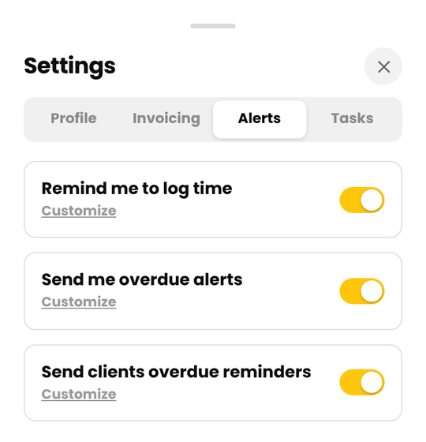
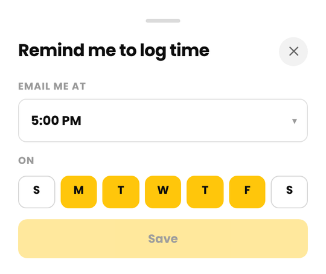
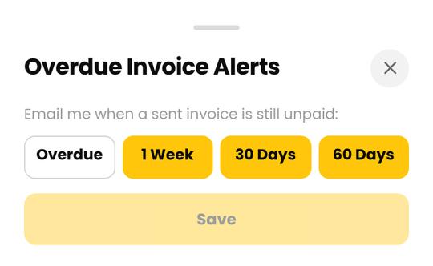
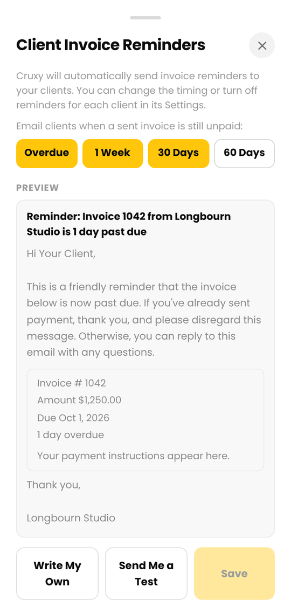
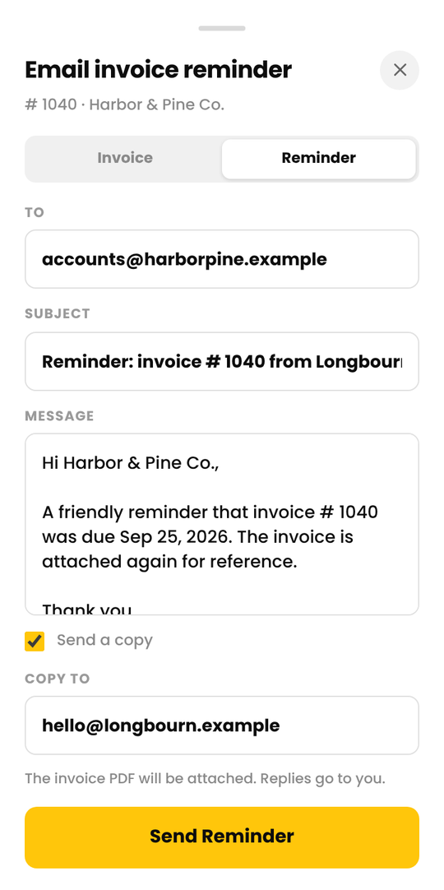
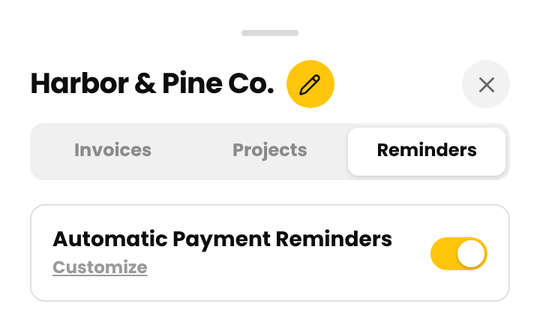
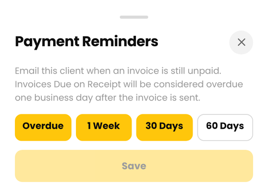

Alerts
Cruxy can nudge you to log time, tell you when an invoice is overdue, and on Pro remind your clients for you.
Updated
Where to find them
Open Settings > Alerts. There are three switches:
- Remind me to log time (Free and Pro)
- Send me overdue alerts (Free and Pro)
- Send clients overdue reminders (Pro)
Each has a Customize link for the details. Flipping a switch saves it right away.

Remind me to log time
Turn on Remind me to log time and Cruxy emails you at a time you choose, on the days you choose, as long as you haven't logged any time yet that day. Tap Customize to set Email Me At (any hour from 5:00 AM to 10:00 PM) and the days of the week. The default is 5:00 PM, Monday to Friday.
The time uses the time zone of the device you saved it on.

Overdue invoice alerts to you
Turn on Send me overdue alerts and Cruxy emails you when a sent invoice is still unpaid. Tap Customize to choose when: Overdue (the day it becomes overdue), 1 Week, 30 Days and 60 Days after.
Each alert lists the invoice, the client, the amount and how many days it is overdue. It also says whether your client has been reminded.
An invoice counts as overdue once it's been sent, isn't paid and is past its due date. Due-on-receipt invoices get one business day first.

Automatic reminders to your clients (Pro)
With Pro, Cruxy can email your client for you when an invoice is overdue. It goes out from your business name, so it reads like it came from you.
- Open Settings > Alerts and turn on Send clients overdue reminders.
- Tap Customize to open Client Invoice Reminders. Choose which days clients get a reminder, and see a preview of the email.
When this is on, every active client gets reminders on the days you choose: Overdue, 1 Week, 30 Days or 60 Days. Clients with no billing email are skipped. Add one in the client's details. Nothing is sent for an invoice that has been paid.

Choose what the email says
The default message is friendly and short: it says the invoice is past due, thanks them if they have already paid, and invites them to reply with questions.
To write your own, tap Write My Own and type up to 1,000 characters of plain text. Tap Use Default to go back. Cruxy always adds the greeting, the invoice details (number, amount, due date and days overdue), your payment instructions and a thank-you. The subject is also written for you, for example "Reminder: Invoice 1042 from Acme is 1 day past due".
Tap Send Me a Test to get a sample at your own email address. It's never sent to a client. Replies from clients go to your business email, or to your login email if you haven't set one.

Change reminders for one client
Open a client and tap the Reminders tab. Switch Automatic Payment Reminders off for just that client, or tap Customize to give that client its own timing: Overdue, 1 Week, 30 Days or 60 Days. If client reminders are off in Settings, this tab says so and offers a shortcut to turn them on.


See who has been reminded
Open an overdue invoice. Under the title you'll see "Client reminded" with the date and the number sent, or a note if a reminder didn't arrive or was marked as spam. The overdue alert email you get also says whether the client was notified.